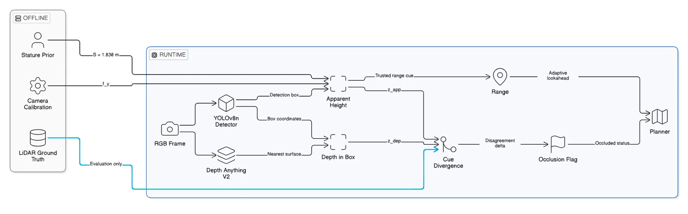
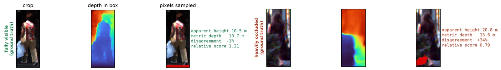
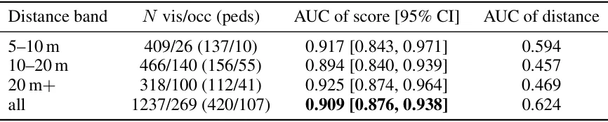
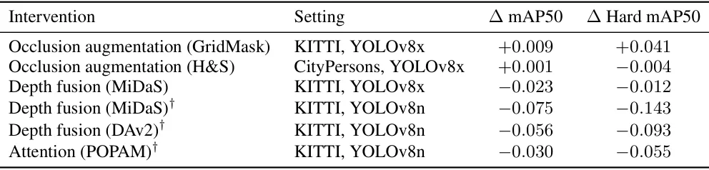

O Problema da Oclusão em Ambientes Reais
A detecção de pedestres é um pilar fundamental para a navegação autônoma, mas a oclusão, quando partes do corpo são bloqueadas por outros objetos, permanece como uma das principais causas de falha em ambientes complexos. Em situações de rua, é raro ver um pedestre totalmente visível; frequentemente, ele está atrás de carros, árvores ou outros obstáculos. Para um robô ou veículo autônomo, saber que um pedestre está parcialmente oculto é tão crucial quanto detectar sua presença, pois isso permite ajustar as estimativas de incerteza ou encurtar o horizonte de planejamento.
A literatura tradicional aborda a oclusão de três formas principais: fusão de profundidade (combinando dados de câmeras e LiDAR), aumento de dados simulando oclusão durante o treinamento (mascarando partes dos objetos) ou mecanismos de atenção que re-pesam características visíveis. No entanto, essas abordagens têm limitações severas. A fusão de LiDAR é cara e difícil de justificar em plataformas de baixo custo. Augmentações de oclusão melhoram o desempenho dentro da distribuição de treino, mas muitas vezes falham ao transferir para novos domínios. Além disso, nenhuma dessas técnicas informa explicitamente se uma detecção específica é oclusiva ou não; elas apenas tentam tornar o detector mais robusto.
Os autores deste trabalho, da Universidade de Lagos, ML Collective e Universidade Federal de Tecnologia de Minna, partem de uma observação prática: detectores treinados em benchmarks padrão (como KITTI) perdem cerca de metade da precisão quando aplicados a cenas de rua reais, como as coletadas em Lagos, Nigéria. Essa lacuna entre o benchmark e a realidade motiva a busca por sinais que não dependam de anotações locais ou de um domínio de treino idêntico ao de implantação.
A Ideia Central: O Desacordo como Sinal
Em vez de tentar corrigir a detecção ou treinar um classificador de oclusão, os autores propõem extrair o sinal de oclusão diretamente do desacordo entre duas estimativas de distância que um pipeline baseado apenas em câmera já calcula. A premissa é simples: dois indicadores de distância, quando combinados de maneira específica, divergem sistematicamente quando há um objeto bloqueando a visão do pedestre.
O primeiro indicador é a altura aparente. Como a caixa delimitadora (bounding box) de um pedestre detectado geralmente abrange toda a extensão vertical da pessoa, mesmo que parte dela esteja oculta, a altura em pixels da caixa permanece relativamente estável, independentemente do nível de oclusão. O segundo indicador é a profundidade métrica monocular. Modelos de profundidade, como o Depth Anything V2, preveem a distância até a superfície mais próxima visível em cada ponto da imagem. Se um pedestre está oculto por um carro, a profundidade medida dentro da caixa do pedestre será a do carro, não a do pedestre atrás dele.
Essa divergência cria um sinal claro. Para um pedestre visível, a altura aparente e a profundidade mínima concordam sobre a distância. Para um pedestre oculto, a profundidade é puxada para mais perto (devido ao oclusor), enquanto a altura aparente mantém a estimativa da distância real do pedestre. O método não precisa saber quem é o oclusor ou recuperar os pixels escondidos; ele apenas precisa notar que as duas estimativas de distância não batem.

O Mecanismo Detalhado: Altura vs. Profundidade Mínima
O pipeline opera em duas etapas principais. Primeiro, um detector de objetos (YOLOv8x) identifica pedestres e gera caixas delimitadoras. Em seguida, para cada caixa, duas estimativas de distância são calculadas em paralelo.
A primeira estimativa, chamada de altura aparente, é derivada da geometria da câmera pinhole. A fórmula básica envolve a distância focal vertical, a estatura efetiva do pedestre e a altura da caixa em pixels. Em cenários ideais, pedestres adultos têm uma estatura mediana de cerca de 1,83 metros. A chave aqui é que, mesmo com oclusão, a caixa do detector tende a cobrir a altura total do corpo visível, mantendo a altura da caixa consistente. Portanto, essa estimativa é insensível à oclusão, desde que a caixa não encolha drasticamente.
A segunda estimativa vem de um modelo de profundidade monocular métrica (Depth Anything V2). O modelo é congelado (não é ajustado para esta tarefa) e fornece um mapa de profundidade. Para cada caixa de pedestre, os autores extraem o valor mínimo de profundidade dentro dessa caixa. Matematicamente, isso é a profundidade mínima vezes um fator de escala. A profundidade mínima é sensível à oclusão porque, se houver um objeto mais próximo (o oclusor) dentro da caixa, o modelo retornará a distância desse objeto, não a do pedestre atrás dele.
A Fórmula da Pontuação de Oclusão
O insight crucial do paper é que não precisamos dos valores absolutos de distância, nem da focal exata da câmera ou da estatura precisa do pedestre. O que importa é a razão entre as duas estimativas. Se dividirmos a profundidade pela altura aparente, muitos termos de calibração se cancelam.
A pontuação de oclusão final é definida simplesmente como o produto da profundidade mínima pela altura da caixa em pixels. Por que essa fórmula? Se o pedestre está visível, a profundidade mínima é a distância dele e a altura da caixa é proporcional à sua altura. Se ele está oculto, a profundidade mínima diminui (o oclusor está mais perto), enquanto a altura da caixa permanece constante. Isso faz com que o produto diminua. Valores mais baixos da pontuação indicam maior probabilidade de oclusão.
Esta abordagem é invariante a um ganho multiplicativo puro no modelo de profundidade. Se o modelo de profundidade tiver um erro sistemático que escala todos os valores por uma constante, esse fator se cancela na comparação relativa entre detecções. Isso torna o método robusto a variações de escala que são comuns em modelos monocular. No entanto, o método exige profundidade métrica (com escala correta) e não funciona bem com profundidade relativa, pois um offset aditivo (um erro constante de distância) introduziria correlação com a distância real, confundindo o sinal de oclusão com a distância do objeto.

Validação no KITTI e Controle de Confundidores
Os autores avaliaram o método no dataset KITTI, usando 1.941 detecções de pedestres. O principal métrica de avaliação é a Área Sob a Curva (AUC), que mede a capacidade do score de rankizar pedestres fortemente ocluídos acima de pedestres totalmente visíveis.
Os resultados são robustos. O score atingiu um AUC de 0,909 para detecções fortemente ocluídas. Um ponto importante é que o detector YOLOv8x falha em detectar 27% dos pedestres fortemente ocluídos. Ao avaliar apenas as detecções encontradas, o benchmark pode ser otimista. Para mitigar isso, os autores também avaliaram o score em todos os 709 pedestres anotados no teste, independentemente de terem sido detectados ou não. Mesmo nesse cenário mais difícil, o AUC permaneceu alto em 0,888.
Uma crítica comum a sinais baseados em profundidade é que eles podem estar capturando apenas a distância do objeto (pedestres mais longe tendem a ser mais ocluídos). Os autores testaram rigorosamente essa hipótese. Eles dividiram os dados em faixas de distância fixas. Dentro de cada faixa, a distância real do pedestre sozinha não consegue distinguir oclusão, com AUC próximo de 0,5, ou seja, acaso. Em contraste, o score proposto mantém um AUC alto entre 0,894 e 0,925 em todas as faixas. Isso confirma que o sinal é realmente de oclusão, não de profundidade.
Generalização para CARLA e Eficiência Computacional
Para testar a generalização fora do domínio real do KITTI, os autores utilizaram cenas sintéticas do CARLA. O CARLA permite gerar ground-truth de visibilidade exato (renderizando a cena sem oclusores para saber exatamente o que deveria ser visível). Nesse ambiente, o score atingiu um AUC de 0,819, superando significativamente a distância sozinha (0,644). Isso demonstra que o mecanismo de desacordo funciona mesmo com mudanças de domínio e altura de câmera.
Do ponto de vista de eficiência, o cálculo do score é extremamente leve, custando aproximadamente 0,3 ms por frame em uma CPU de laptop. A maior parte do tempo de inferência é gasta no modelo de profundidade (Depth Anything V2), que é uma rede pesada. No entanto, como o método não requer treinamento adicional, ajuste fino ou coleta de novos dados de anotação, o custo marginal de implantação é zero. Uma vez que se tem um pipeline de detecção e profundidade, o sinal de oclusão é gratuito.

Por que Modelos Complexos Falharam?
Um dos pontos fortes do paper é a análise honesta do porquê abordagens mais complexas falharam. Os autores testaram três intervenções baseadas em modelo: fusão de profundidade, aumento de dados de oclusão e atenção. Eles avaliaram 81 checkpoints diferentes.
Nenhuma dessas técnicas melhorou a detecção fora da distribuição de treino. A fusão de profundidade, em particular, piorou a precisão mesmo dentro da distribuição, corroborando estudos anteriores que mostram que modelos de profundidade monocular podem introduzir ruído que prejudica o detector RGB. Além disso, ao testar um detector treinado em dados alemães (KITTI) em cenas de Lagos, a precisão caiu pela metade. Isso destaca a fragilidade de modelos treinados em dados de primeiro mundo para aplicações no Sul Global, onde as condições de rua, iluminação e densidade são diferentes.
O método proposto não sofre dessa fragilidade porque não depende de aprender padrões visuais específicos de oclusão (como texturas de roupas ou formas de corpos). Ele depende de uma propriedade geométrica fundamental: a luz viaja em linha reta e objetos mais próximos bloqueiam objetos mais longe. Essa propriedade é universal, independentemente do contexto geográfico ou cultural.

Limitações e Considerações Finais
Apesar dos resultados promissores, o método tem limitações. Ele assume que a caixa delimitadora do detector cobre a altura total do pedestre. Se o detector falhar em detectar partes do corpo ou se a oclusão for tão severa que a caixa se contraia drasticamente, a estimativa de altura aparente pode ser comprometida. O paper menciona que há uma cauda de caixas de baixa confiança para pedestres fortemente ocluídos que são mais curtas, o que pode afetar a precisão em casos extremos.
Além disso, o método depende da qualidade do modelo de profundidade. Se o modelo de profundidade tiver erros sistemáticos não-lineares ou não for métrico, o sinal de desacordo pode ser corrompido. O paper mostra que verificar a ausência de offset aditivo é possível sem rótulos de oclusão, mas isso exige uma validação prévia do modelo de profundidade no domínio de destino.
Em resumo, Occlusion for Free oferece uma solução elegante e prática para um problema persistente. Em vez de buscar modelos mais complexos que falham em generalizar, os autores exploram a informação latente já presente nos outputs de detecção e profundidade. Para aplicações em robótica de baixo custo ou em regiões com dados escassos, essa abordagem de sem treinamento e sem rótulos é um avanço significativo na robustez de sistemas de percepção.
Takeaways
1. O sinal de oclusão emerge naturalmente do desacordo entre altura aparente (estável) e profundidade mínima (sensível ao oclusor).
2. O método é training-free e label-free, requerendo apenas um detector de objetos e um estimador de profundidade métrica.
3. A validação em faixas de distância prova que o score mede oclusão, não apenas distância ao objeto.
4. Abordagens complexas de treinamento falham em transferir para novos domínios; sinais geométricos invariantes são mais robustos.
O que fica
- O sinal de oclusão emerge naturalmente do desacordo entre altura aparente (estável) e profundidade mínima (sensível ao oclusor).
- O método é training-free e label-free, requerendo apenas um detector de objetos e um estimador de profundidade métrica.
- A validação em faixas de distância prova que o score mede oclusão, não apenas distância ao objeto.
- Abordagens complexas de treinamento falham em transferir para novos domínios; sinais geométricos invariantes são mais robustos.
Paper original: Occlusion for Free: Detecting Occlusion from the Disagreement Between Two Monocular Distance Cues
Comentários
Nenhum comentário ainda. Seja o primeiro.